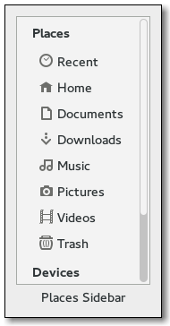

Gtk.PlacesSidebar
Example
Methods
| Inherited: | Gtk.ScrolledWindow (23), Gtk.Bin (1), Gtk.Container (27), Gtk.Widget (256), GObject.Object (33), Gtk.Buildable (10) |
|---|
| static | new() |
| add_shortcut(location) | |
| get_local_only() | |
| get_location() | |
| get_nth_bookmark(n) | |
| get_open_flags() | |
| get_show_connect_to_server() | |
| get_show_desktop() | |
| get_show_enter_location() | |
| list_shortcuts() | |
| remove_shortcut(location) | |
| set_local_only(local_only) | |
| set_location(location) | |
| set_open_flags(flags) | |
| set_show_connect_to_server(show_connect_to_server) | |
| set_show_desktop(show_desktop) | |
| set_show_enter_location(show_enter_location) |
Virtual Methods
| Inherited: | Gtk.ScrolledWindow (2), Gtk.Container (10), Gtk.Widget (82), GObject.Object (7), Gtk.Buildable (10) |
|---|
Properties
| Inherited: | Gtk.ScrolledWindow (10), Gtk.Container (3), Gtk.Widget (38) |
|---|
| Name | Type | Flags | Short Description |
|---|---|---|---|
| local-only | bool | r/w | Whether the sidebar only includes local files |
| location | Gio.File | r/w | The location to highlight in the sidebar |
| open-flags | Gtk.PlacesOpenFlags | r/w | Modes in which the calling application can open locations selected in the sidebar |
| show-connect-to-server | bool | r/w | Whether the sidebar includes a builtin shortcut to a ‘Connect to server’ dialog |
| show-desktop | bool | r/w | Whether the sidebar includes a builtin shortcut to the Desktop folder |
| show-enter-location | bool | r/w | Whether the sidebar includes a builtin shortcut to manually enter a location |
Style Properties
| Inherited: | Gtk.ScrolledWindow (2), Gtk.Widget (17) |
|---|
Signals
| Inherited: | Gtk.ScrolledWindow (2), Gtk.Container (4), Gtk.Widget (69), GObject.Object (1) |
|---|
| Name | Short Description |
|---|---|
| drag-action-ask | The places sidebar emits this signal when it needs to ask the application to pop up a menu to ask the user for which drag action to perform. |
| drag-action-requested | When the user starts a drag-and-drop operation and the sidebar needs to ask the application for which drag action to perform, then the sidebar will emit this signal. |
| drag-perform-drop | The places sidebar emits this signal when the user completes a drag-and-drop operation and one of the sidebar’s items is the destination. |
| open-location | The places sidebar emits this signal when the user selects a location in it. |
| populate-popup | The places sidebar emits this signal when the user invokes a contextual menu on one of its items. |
| show-connect-to-server | The places sidebar emits this signal when it needs the calling application to present an way to connect directly to a network server. |
| show-enter-location | The places sidebar emits this signal when it needs the calling application to present an way to directly enter a location. |
| show-error-message | The places sidebar emits this signal when it needs the calling application to present an error message. |
Fields
| Inherited: | Gtk.ScrolledWindow (1), Gtk.Bin (1), Gtk.Container (1), Gtk.Widget (1), GObject.InitiallyUnowned (3), GObject.Object (3) |
|---|
Class Details
- class Gtk.PlacesSidebar(hadjustment=None, vadjustment=None, **kwds)
Bases: Gtk.ScrolledWindow
Gtk.PlacesSidebar is a widget that displays a list of frequently-used places in the file system: the user’s home directory, the user’s bookmarks, and volumes and drives. This widget is used as a sidebar in Gtk.FileChooser and may be used by file managers and similar programs.
The places sidebar displays drives and volumes, and will automatically mount or unmount them when the user selects them.
Applications can hook to various signals in the places sidebar to customize its behavior. For example, they can add extra commands to the context menu of the sidebar.
While bookmarks are completely in control of the user, the places sidebar also allows individual applications to provide extra shortcut folders that are unique to each application. For example, a Paint program may want to add a shortcut for a Clipart folder. You can do this with Gtk.PlacesSidebar.add_shortcut ().
To make use of the places sidebar, an application at least needs to connect to the Gtk.PlacesSidebar ::open-location signal. This is emitted when the user selects in the sidebar a location to open. The application should also call Gtk.PlacesSidebar.set_location () when it changes the currently-viewed location.
- static new()
Returns: a newly created Gtk.PlacesSidebar Return type: Gtk.Widget Creates a new Gtk.PlacesSidebar widget.
The application should connect to at least the Gtk.PlacesSidebar ::open-location signal to be notified when the user makes a selection in the sidebar.
New in version 3.10.
- add_shortcut(location)
Parameters: location (Gio.File) – location to add as an application-specific shortcut Applications may want to present some folders in the places sidebar if they could be immediately useful to users. For example, a drawing program could add a “/usr/share/clipart” location when the sidebar is being used in an “Insert Clipart” dialog box.
This function adds the specified location to a special place for immutable shortcuts. The shortcuts are application-specific; they are not shared across applications, and they are not persistent. If this function is called multiple times with different locations, then they are added to the sidebar’s list in the same order as the function is called.
New in version 3.10.
- get_local_only()
Returns: True if the sidebar will only show local files. Return type: bool Returns the value previously set with Gtk.PlacesSidebar.set_local_only ().
New in version 3.12.
- get_location()
Returns: a Gio.File with the selected location, or None if nothing is visually selected. Return type: Gio.File Gets the currently-selected location in the sidebar. This can be None when nothing is selected, for example, when Gtk.PlacesSidebar.set_location () has been called with a location that is not among the sidebar’s list of places to show.
You can use this function to get the selection in the sidebar. Also, if you connect to the Gtk.PlacesSidebar ::populate-popup signal, you can use this function to get the location that is being referred to during the callbacks for your menu items.
New in version 3.10.
- get_nth_bookmark(n)
Parameters: n (int) – index of the bookmark to query Returns: The bookmark specified by the index n, or None if no such index exist. Note that the indices start at 0, even though the file chooser starts them with the keyboard shortcut “Alt-1”. Return type: Gio.File This function queries the bookmarks added by the user to the places sidebar, and returns one of them. This function is used by Gtk.FileChooser to implement the “Alt-1”, “Alt-2”, etc. shortcuts, which activate the cooresponding bookmark.
New in version 3.10.
- get_open_flags()
Returns: the Gtk.PlacesOpenFlags of sidebar Return type: Gtk.PlacesOpenFlags Gets the open flags.
New in version 3.10.
- get_show_connect_to_server()
Returns: True if the sidebar will display a “Connect to Server” item. Return type: bool Returns the value previously set with Gtk.PlacesSidebar.set_show_connect_to_server ()
New in version 3.10.
- get_show_desktop()
Returns: True if the sidebar will display a builtin shortcut to the desktop folder. Return type: bool Returns the value previously set with Gtk.PlacesSidebar.set_show_desktop ()
New in version 3.10.
- get_show_enter_location()
Returns: True if the sidebar will display an “Enter Location” item. Return type: bool Returns the value previously set with Gtk.PlacesSidebar.set_show_enter_location ()
New in version 3.14.
- list_shortcuts()
Returns: A GLib.SList of Gio.File of the locations that have been added as application-specific shortcuts with Gtk.PlacesSidebar.add_shortcut (). To free this list, you can use <!-- language="C" --> g_slist_free_full (list, (GDestroyNotify) g_object_unref);
Return type: [Gio.File] Gets the list of shortcuts.
New in version 3.10.
- remove_shortcut(location)
Parameters: location (Gio.File) – location to remove Removes an application-specific shortcut that has been previously been inserted with Gtk.PlacesSidebar.add_shortcut (). If the location is not a shortcut in the sidebar, then nothing is done.
New in version 3.10.
- set_local_only(local_only)
Parameters: local_only (bool) – whether to show only local files Sets whether the sidebar should only show local files.
New in version 3.12.
- set_location(location)
Parameters: location (Gio.File or None) – location to select, or None for no current path Sets the location that is being shown in the widgets surrounding the sidebar, for example, in a folder view in a file manager. In turn, the sidebar will highlight that location if it is being shown in the list of places, or it will unhighlight everything if the location is not among the places in the list.
New in version 3.10.
- set_open_flags(flags)
Parameters: flags (Gtk.PlacesOpenFlags) – Bitmask of modes in which the calling application can open locations Sets the way in which the calling application can open new locations from the places sidebar. For example, some applications only open locations “directly” into their main view, while others may support opening locations in a new notebook tab or a new window.
This function is used to tell the places sidebar about the ways in which the application can open new locations, so that the sidebar can display (or not) the “Open in new tab” and “Open in new window” menu items as appropriate.
When the Gtk.PlacesSidebar ::open-location signal is emitted, its flags argument will be set to one of the flags that was passed in Gtk.PlacesSidebar.set_open_flags ().
Passing 0 for flags will cause Gtk.PlacesOpenFlags.NORMAL to always be sent to callbacks for the “open-location” signal.
New in version 3.10.
- set_show_connect_to_server(show_connect_to_server)
Parameters: show_connect_to_server (bool) – whether to show an item for the Connect to Server command Sets whether the sidebar should show an item for connecting to a network server; this is off by default. An application may want to turn this on if it implements a way for the user to connect to network servers directly.
New in version 3.10.
- set_show_desktop(show_desktop)
Parameters: show_desktop (bool) – whether to show an item for the Desktop folder Sets whether the sidebar should show an item for the Desktop folder. The default value for this option is determined by the desktop environment and the user’s configuration, but this function can be used to override it on a per-application basis.
New in version 3.10.
- set_show_enter_location(show_enter_location)
Parameters: show_enter_location (bool) – whether to show an item for the Connect to Server command Sets whether the sidebar should show an item for connecting to a network server; this is off by default. An application may want to turn this on if it implements a way for the user to connect to network servers directly.
New in version 3.14.
Signal Details
- Gtk.PlacesSidebar.signals.drag_action_ask(places_sidebar, actions)
Signal Name: drag-action-ask
Flags: Parameters: - places_sidebar (Gtk.PlacesSidebar) – The object which received the signal
- actions (int) – Possible drag actions that need to be asked for.
Returns: the final drag action that the sidebar should pass to the drag side of the drag-and-drop operation.
Return type: The places sidebar emits this signal when it needs to ask the application to pop up a menu to ask the user for which drag action to perform.
New in version 3.10.
- Gtk.PlacesSidebar.signals.drag_action_requested(places_sidebar, context, dest_file, source_file_list)
Signal Name: drag-action-requested
Flags: Parameters: - places_sidebar (Gtk.PlacesSidebar) – The object which received the signal
- context (Gdk.DragContext) – Gdk.DragContext with information about the drag operation
- dest_file (Gio.File) – Gio.File with the tentative location that is being hovered for a drop
- source_file_list ([Gio.File]) – List of Gio.File that are being dragged
Returns: The drag action to use, for example, Gdk.DragAction.COPY or Gdk.DragAction.MOVE, or 0 if no action is allowed here (i.e. drops are not allowed in the specified dest_file ).
Return type: When the user starts a drag-and-drop operation and the sidebar needs to ask the application for which drag action to perform, then the sidebar will emit this signal.
The application can evaluate the context for customary actions, or it can check the type of the files indicated by source_file_list against the possible actions for the destination dest_file.
The drag action to use must be the return value of the signal handler.
New in version 3.10.
- Gtk.PlacesSidebar.signals.drag_perform_drop(places_sidebar, dest_file, source_file_list, action)
Signal Name: drag-perform-drop
Flags: Parameters: The places sidebar emits this signal when the user completes a drag-and-drop operation and one of the sidebar’s items is the destination. This item is in the dest_file, and the source_file_list has the list of files that are dropped into it and which should be copied/moved/etc. based on the specified action.
New in version 3.10.
- Gtk.PlacesSidebar.signals.open_location(places_sidebar, location, open_flags)
Signal Name: open-location
Flags: Parameters: - places_sidebar (Gtk.PlacesSidebar) – The object which received the signal
- location (Gio.File) – Gio.File to which the caller should switch.
- open_flags (Gtk.PlacesOpenFlags) – a single value from Gtk.PlacesOpenFlags specifying how the location should be opened.
The places sidebar emits this signal when the user selects a location in it. The calling application should display the contents of that location; for example, a file manager should show a list of files in the specified location.
New in version 3.10.
- Gtk.PlacesSidebar.signals.populate_popup(places_sidebar, menu, selected_item, selected_volume)
Signal Name: populate-popup
Flags: Parameters: - places_sidebar (Gtk.PlacesSidebar) – The object which received the signal
- menu (Gtk.Menu) – a Gtk.Menu.
- selected_item (Gio.File or None) – Gio.File with the item to which the menu should refer, or None in the case of a selected_volume.
- selected_volume (Gio.Volume or None) – Gio.Volume if the selected item is a volume, or None if it is a file.
The places sidebar emits this signal when the user invokes a contextual menu on one of its items. In the signal handler, the application may add extra items to the menu as appropriate. For example, a file manager may want to add a “Properties” command to the menu.
It is not necessary to store the selected_item for each menu item; during their Gtk.MenuItem ::activate callbacks, the application can use Gtk.PlacesSidebar.get_location () to get the file to which the item refers.
The selected_item argument may be None in case the selection refers to a volume. In this case, selected_volume will be non-NULL. In this case, the calling application will have to GObject.Object.ref () the selected_volume and keep it around for the purposes of its menu item’s “activate” callback.
The menu and all its menu items are destroyed after the user dismisses the menu. The menu is re-created (and thus, this signal is emitted) every time the user activates the contextual menu.
New in version 3.10.
- Gtk.PlacesSidebar.signals.show_connect_to_server(places_sidebar)
Signal Name: show-connect-to-server Flags: RUN_FIRST Parameters: places_sidebar (Gtk.PlacesSidebar) – The object which received the signal The places sidebar emits this signal when it needs the calling application to present an way to connect directly to a network server. For example, the application may bring up a dialog box asking for a URL like “sftp://ftp.example.com”. It is up to the application to create the corresponding mount by using, for example, Gio.File.mount_enclosing_volume ().
New in version 3.10.
- Gtk.PlacesSidebar.signals.show_enter_location(places_sidebar)
Signal Name: show-enter-location Flags: RUN_FIRST Parameters: places_sidebar (Gtk.PlacesSidebar) – The object which received the signal The places sidebar emits this signal when it needs the calling application to present an way to directly enter a location. For example, the application may bring up a dialog box asking for a URL like “http://http.example.com”.
New in version 3.14.
- Gtk.PlacesSidebar.signals.show_error_message(places_sidebar, primary, secondary)
Signal Name: show-error-message
Flags: Parameters: - places_sidebar (Gtk.PlacesSidebar) – The object which received the signal
- primary (str) – primary message with a summary of the error to show.
- secondary (str) – secondary message with details of the error to show.
The places sidebar emits this signal when it needs the calling application to present an error message. Most of these messages refer to mounting or unmounting media, for example, when a drive cannot be started for some reason.
New in version 3.10.
Property Details
- Gtk.PlacesSidebar.props.local_only
Name: local-only Type: bool Default Value: False Flags: r/w Whether the sidebar only includes local files
- Gtk.PlacesSidebar.props.location
Name: location Type: Gio.File Default Value: None Flags: r/w The location to highlight in the sidebar
- Gtk.PlacesSidebar.props.open_flags
Name: open-flags Type: Gtk.PlacesOpenFlags Default Value: Gtk.PlacesOpenFlags.NORMAL Flags: r/w Modes in which the calling application can open locations selected in the sidebar
- Gtk.PlacesSidebar.props.show_connect_to_server
Name: show-connect-to-server Type: bool Default Value: False Flags: r/w Whether the sidebar includes a builtin shortcut to a ‘Connect to server’ dialog